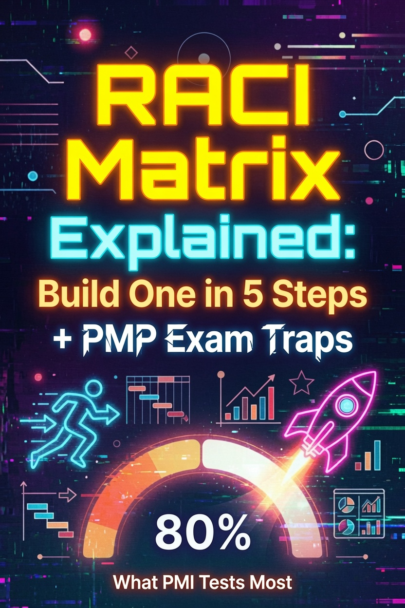

RACI Matrix Explained: Build One in 5 Steps + PMP Exam Traps

A RACI matrix assigns one of four roles to every person on every task: Responsible, Accountable, Consulted, Informed. The format is simple. Teams still fill it in wrong, and the PMP exam tests the same errors each cycle.
The failure is the same. Two people marked Accountable for one deliverable. Half the cells marked Consulted. A matrix built after the work started. You avoid all three by learning the four roles, the one-accountable rule, and a five-step build process. Each one maps to a trap you will recognize on test day.
What Is a RACI Matrix?
PMBOK 8 defines a responsibility assignment matrix as a grid that shows which project resources attach to each work package. RACI is the most common version. You put activities in the rows, people or roles in the columns, and one letter in each cell. The letter says how that person touches that task.
PMI recommends the RACI form when the team mixes internal and external resources. A vendor does the integration work, your engineer reviews it, your sponsor signs off. Without a matrix, each of those three people assumes someone else owns the outcome.
The Four Roles
Four letters carry the whole matrix. The first two decide most exam questions.
| Role | Meaning | What the person does |
|---|---|---|
| R Responsible | Does the work | Completes the task and hands off the deliverable |
| A Accountable | Owns the outcome | Answers for the result and approves the deliverable. One per task. |
| C Consulted | Gives input | Two-way communication. Advises before the decision. |
| I Informed | Gets updates | One-way communication. Learns the outcome after the decision. |
R is Responsible. This person does the work. One R per task is the target. Two Rs split ownership and blur the handoff, though PMBOK 8's own sample shows a case where two people share the work on one activity.
A is Accountable. This person owns the outcome. They answer for the result, approve the deliverable, and take the hit when it fails. A task holds one A. PMBOK 8 is explicit about why: one accountable person per task prevents confusion about who holds authority for the work.
C is Consulted. This person gives input before the decision. You ask, they answer, you decide. The communication runs both ways.
I is Informed. This person receives updates after the decision. They need to know the outcome, they do not need to shape it. The communication runs one way.
Exam questions lean hardest on the R and A distinction. R does the work. A answers for it. When the exam asks who is accountable for the result, the answer is A, even when R built the deliverable.
The One-Accountable Rule
PMBOK 8 states the rule in one sentence: a responsibility assignment matrix "ensures that there is only one person accountable for any one task to avoid confusion about who is ultimately in charge or has authority for the work."
One A per task. When two names share a cell marked A, the matrix stops working. People wait on each other. The exam turns this into a question: a project manager reviews the RACI matrix and finds two people marked Accountable for the same deliverable. The correct response is to designate a single accountable owner for that deliverable.
Build One in 5 Steps
- Pull the tasks from the WBS and list them as rows. Keep the granularity where decisions happen. A row for "integration" is too coarse if three people touch different parts of it.
- List the people or roles as columns. Name individuals when one person answers for the work. A generic "team" column hides the accountability the matrix exists to expose.
- Assign R first. One person does the work. If two people share it, split the task into two rows instead of doubling the R.
- Assign A next. One person owns the result. The A can match the R, and it should differ when the doer and the approver must stay independent, like a tester approving a developer's code.
- Add C and I last, sparingly. Each C you add means someone expects to be consulted, and each I means someone expects updates. Fill them only where input or awareness changes the outcome.
Build the matrix with the team in the room. A matrix drafted alone reflects nobody's real job, and the team will ignore it the first time it contradicts their actual responsibilities.
Sample RACI Matrix
PMBOK 8 publishes a sample matrix with five people and four activities. The pattern matters more than the letters: one Accountable owner per row, and the R slots stay visible so the doer is never in doubt.
| Activity | Ann | Ben | Carlos | Dina | Ed |
|---|---|---|---|---|---|
| Create charter | A | R | I | I | I |
| Collect requirements | I | A | R | C | C |
| Submit change request | I | A | R | R | C |
| Develop test plan | A | C | I | I | R |
Read the columns. Ben holds the single A on three activities and never does the hands-on work. Carlos does the building and stays out of the sign-off loop. Ann approves the test plan while Ed writes it. That separation between the doer and the approver is what the exam wants you to see.
Common RACI Mistakes
- Two As in one row. Breaks the one-accountable rule and creates a waiting game.
- R and A stacked on the same person for every task. Removes the independent check. The person who builds also approves their own work.
- Too many Cs. Consultation becomes paralysis. Every C is a person whose opinion you promised to seek.
- C used as a status line. C is two-way input before the decision. I is one-way notice after it. Using C for people who only need to know inflates the matrix.
- Building it alone. A matrix the team never sees is a document, not a control.
PMP Exam Traps
The exam describes roles without naming them. Match the behavior to the letter:
- "Who must approve this deliverable before it proceeds?" maps to Accountable.
- "Who performs the task?" maps to Responsible.
- "Who provides expert input before the decision?" maps to Consulted.
- "Who needs to be notified of the outcome?" maps to Informed.
The legal review scenario is the classic C versus I question. "The legal team must review the contract terms before signature" describes consultation, because legal shapes the decision. "The finance team should know the contract value after signing" describes information, because finance only records the outcome.
One more trap: role inflation. An answer that marks everyone as Accountable for everything fails the one-accountable rule on its face. The exam buries this in plausible-sounding options like "empower all stakeholders to approve the final scope." Empowerment does not mean shared accountability.
RACI in PMBOK 8 Context
PMBOK 8 files the responsibility assignment matrix under its tools and techniques, but the matrix shows up across the performance domains. In the Resources domain it clarifies team roles. In Stakeholders it removes ambiguity about who does what. In Governance it supports the accountable leader principle: a single owner makes decisions traceable.
Role clarity is also an empowered culture trait. When people know who decides, they stop escalating and start working. The six principles post explains how Build an Empowered Culture and Be an Accountable Leader connect to this kind of role design.
RACI pairs with the power/interest grid on the exam. The grid classifies stakeholders by influence and interest. RACI assigns them to work. A question about who to engage points at the grid. A question about who approves a deliverable points at RACI. Keeping the two tools separate in your head resolves half the stakeholder questions you will face.
Exam Scenarios
Scenario 1. A new team member asks who approves the test plan. The RACI matrix shows the test lead as Responsible and the project manager as Accountable. Who signs off? The project manager, because the accountable owner approves the deliverable. The test lead builds it, the project manager answers for it.
Scenario 2. The project manager reviews the RACI matrix and finds three stakeholders marked Consulted on the same decision. What should the PM do first? Confirm each person's input is needed, then cut the list. Excessive consultation delays the decision without improving it.
Frequently Asked Questions
Can one person hold both R and A for the same task? Yes, on small projects or when the doer is senior enough to approve their own work. PMI allows it. The one-accountable rule still holds: one A per task.
How many people should be Accountable for a single task? One. PMBOK 8 requires a single accountable owner to avoid confusion about who holds authority for the work.
What is the difference between Consulted and Informed? Consulted gives input before the decision, so the communication runs two ways. Informed receives updates after the decision, so it runs one way.
Does the PMP exam test RACI? Yes. PMBOK 8 covers the responsibility assignment matrix in its tools and techniques, and role-assignment scenarios appear in the People domain.
Can a RACI matrix have more than one Responsible person per row? It can, when two people share the work, but a single Accountable owner must still approve the result. PMBOK 8's own sample matrix shows two Responsible entries on one activity.
Last updated: August 2, 2026
Want the full study system? The PMP Exam Cracker delivers 64 pages of compressed study guide, 80 practice questions, and an annotated answer key, built for the 8th Edition exam.